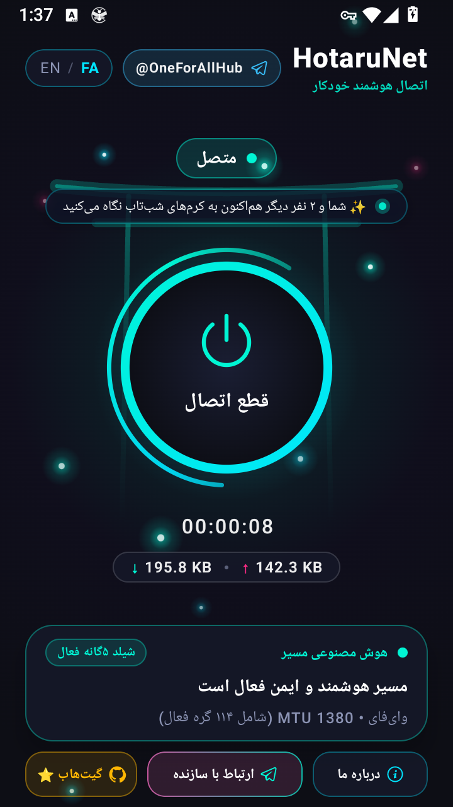
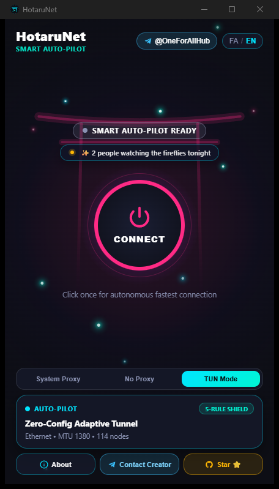
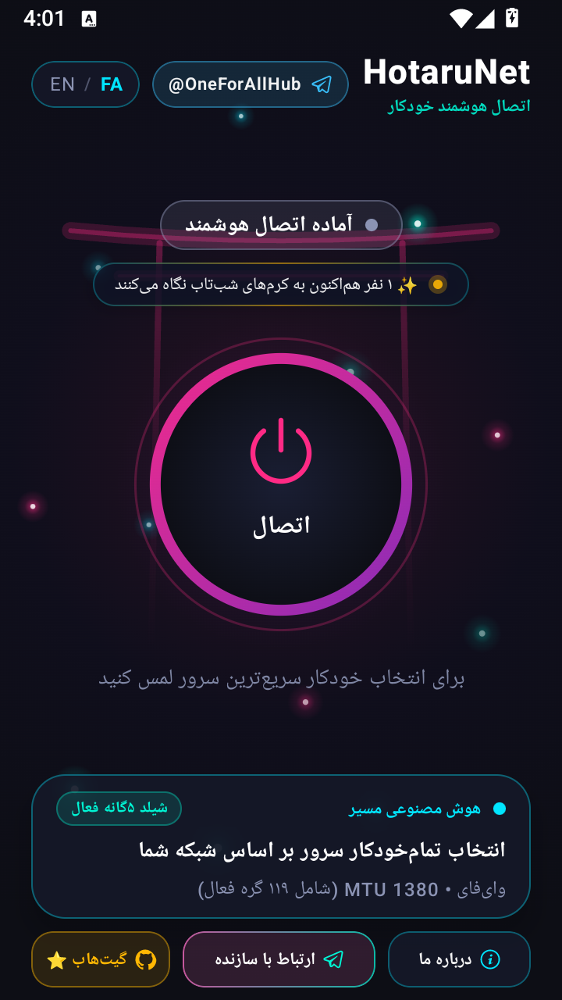
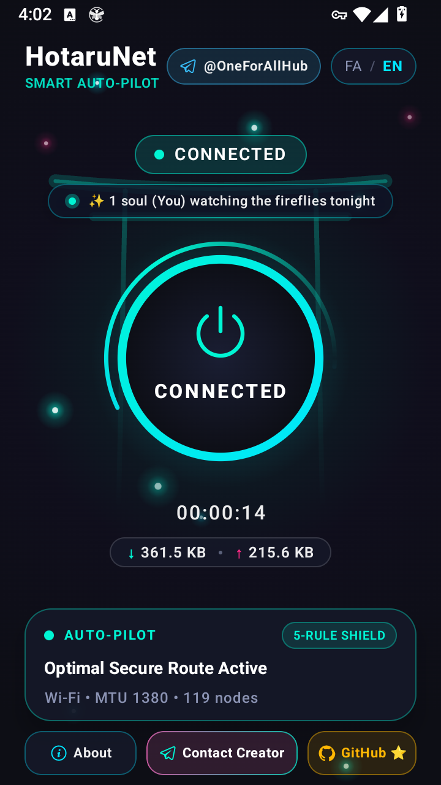
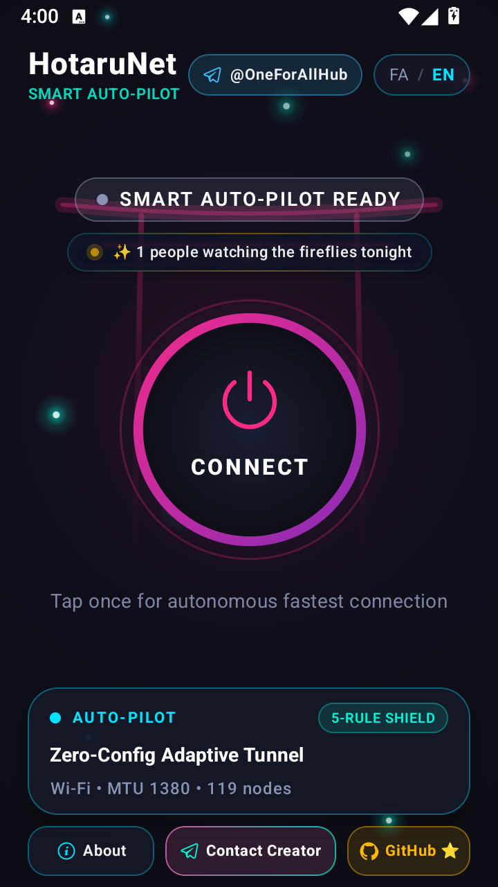
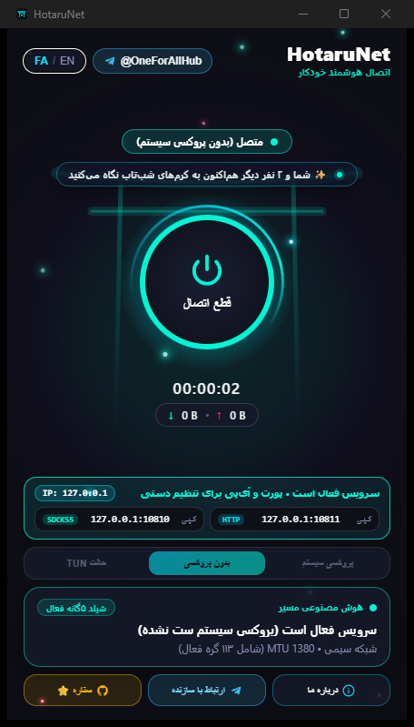
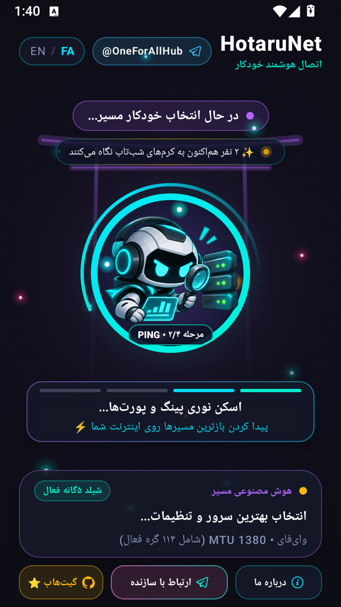

فیلترشکن هوشمند و بدون نیاز به کانفیگ برای اندروید و ویندوز
فقط دکمه اتصال را بزنید! HotaruNet بهجای پینگهای گولزننده HTTP 204، سرعت واقعی دانلود را میسنجد و بین ۵ پروتکل مدرن ضدفیلتر (VLESS REALITY، WARP، Hysteria 2، XHTTP و WS+TLS) بهترین مسیر را روی اینترنت شما پیدا و پایش میکند.


دانلود مستقیم آخرین نسخه
فایلهای رسمی مستقیماً از GitHub Releases دریافت میشوند و دارای اعتبارسنجی SHA-256 هستند.
📱 اندروید ۷ تا ۱۵ (APK)
ساختهشده با Jetpack Compose و Xray-core. اگر مدل پردازنده گوشی خود را نمیدانید، نسخه Universal را نصب کنید.
🪟 ویندوز ۱۰ و ۱۱ (۶۴ بیتی - پرتابل)
مبتنی بر Tauri 2 و Xray-core بدون نیاز به نصب. شامل ۳ حالت System Proxy، بدون پروکسی (No Proxy) و درایور رسمی Wintun TUN.
- فایل ZIP را در یک پوشه Extract کنید و
HotaruNet.exeرا اجرا نمایید. - حالت System Proxy بدون دسترسی ادمین فوراً کار میکند؛ حالت No Proxy نیز فقط پورت محلی
SOCKS5 / HTTPرا با دکمه کپی فعال میکند. - برای تونل کل سیستم (بازی، ترمینال و تلگرام) با Run as administrator اجرا و حالت TUN را فعال کنید.
🔐 مشاهده کدهای اعتبارسنجی SHA-256 (نسخه v2.3.44)
| فایل | SHA-256 |
|---|---|
HotaruNet_v2.3.44_windows_x64.zip |
3A49F3C4DAC2B93F5E54672807430F525A7854F7C091F6869C0404C0A736EF11 |
HotaruNet_2.3.44_arm64-v8a.apk |
03B932BEF265BFC112B8D8B0B4268F21490C7552C20B4F308C16D96D71F4A96D |
HotaruNet_2.3.44_universal.apk |
3C78CEB9DAC2D55235CF42D7EAE07EAF15B886AA262A57E4CD75BEA7B6FCFB66 |
HotaruNet_2.3.44_armeabi-v7a.apk |
599C15C53ABFBC1FCE9206C73904D8933F8F3E84E187C138F244D88D8249904F |
HotaruNet_2.3.44_x86_64.apk |
75D8BEF708BB212F97BEDCF33BBD892451BC2DE7A4954652E917E805F09D4F6D |
HotaruNet_2.3.44_x86.apk |
BF6E2876D9908AE8233529D958CD103C5A3637E4D274A4E45B3D1F0216F5F421 |
چرا HotaruNet روی اینترنتهای محدود پایدار است؟
موتور Auto-Pilot بهصورت خودکار با شرایط اپراتورهای همراه و ثابت (همراه اول، ایرانسل، شاتل، مخابرات و...) سازگار میشود.
🚀 تست سرعت واقعی دانلود
پاسخ خالی HTTP 204 ملاک سرعت نیست. هوتارو نت سرعت واقعی دریافت پکیج ۳۲ کیلوبایتی را میسنجد و سرورهای واقعی پرسرعت را انتخاب میکند.
🛡️ نگهبان زنده و سوییچ خودکار
هر ۳۵ ثانیه با مصرف ناچیز (۳۲ کیلوبایت) مسیر پایش میشود و اگر سرعت به زیر ۶۴ KB/s افت کند، بدون قطعی به مسیر سریعتر منتقل میشوید.
🌍 بدون محدودیت جغرافیایی
سرورهای اروپا، آمریکا و آسیا بدون فیلتر مصنوعی و صرفاً بر اساس پهنایباند و پایداری واقعی با هم رقابت میکنند.
VLESS + REALITY
پورت 443 با XTLS Vision و شبیهسازی کامل ترافیک TLS واقعی
Cloudflare WARP
ثبت کلید اختصاصی WireGuard در هر دستگاه روی IPهای تمیز Anycast
Hysteria 2
مبتنی بر QUIC / UDP با کنترل ازدحام بهینه برای عبور از Packet Loss
XHTTP / SplitHTTP
ترنسپورت مقاوم HTTP/2 و HTTP/3 سازگار با CDNها
WebSocket + TLS
مسیر پشتیبان از طریق Reverse Proxy برای شبکههای سختگیر
محیط کاربری دوزبانه (فارسی RTL و English)
برای بزرگنمایی روی هر تصویر کلیک کنید.

اندروید — صفحه اصلی (فارسی)
اندروید — متصل (English)
اندروید — صفحه اصلی (English)
ویندوز — حالت No Proxy با پورت SOCKS5 / HTTP
اندروید — ربات ۴ مرحلهای اتصال